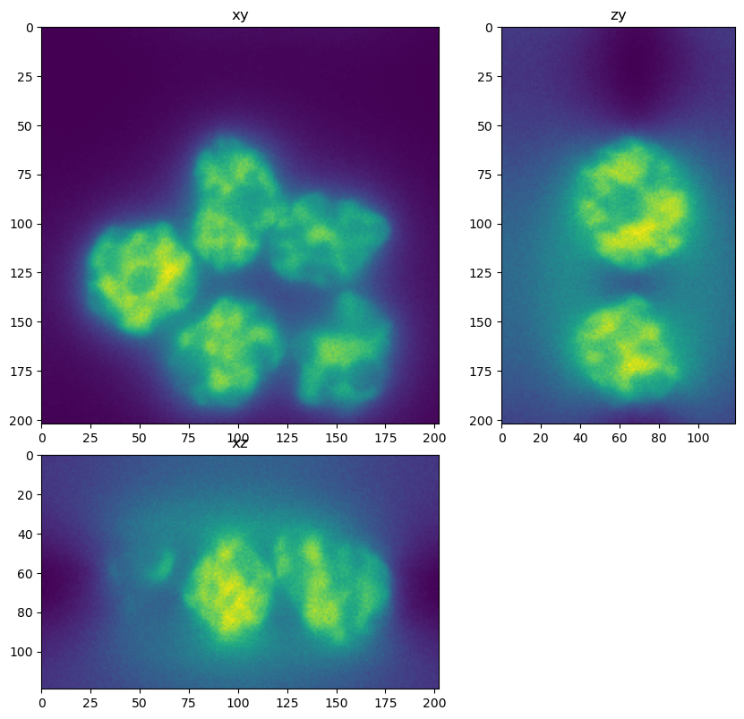
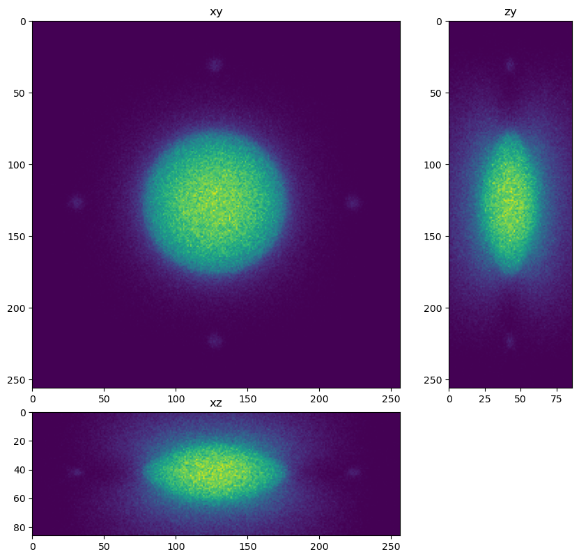
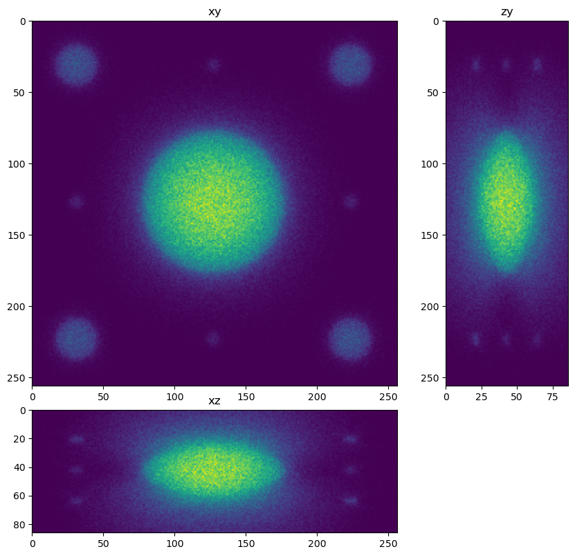
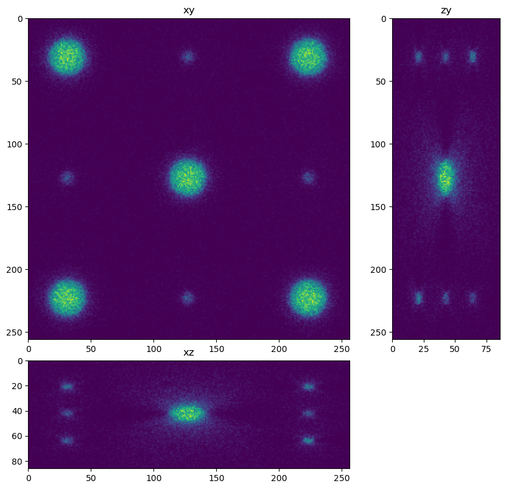
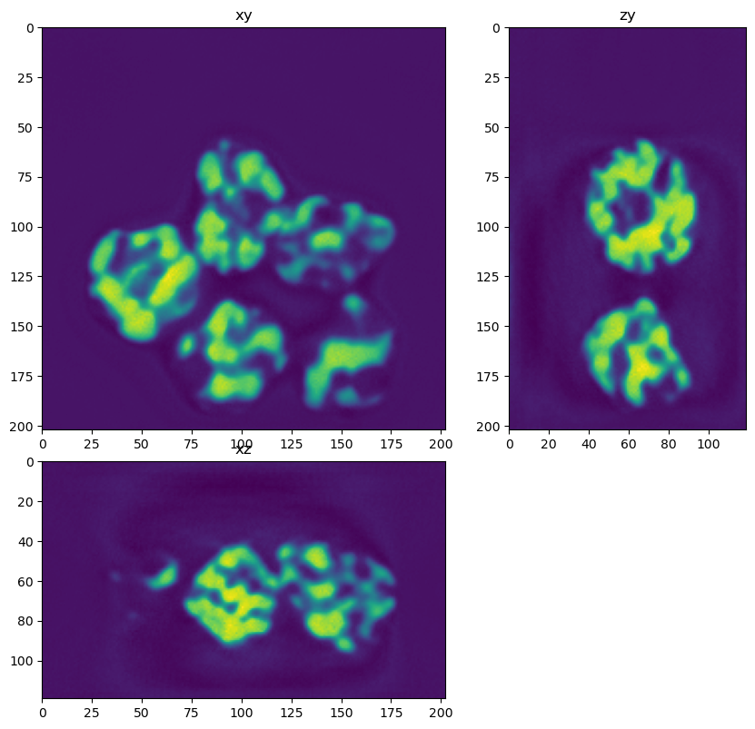
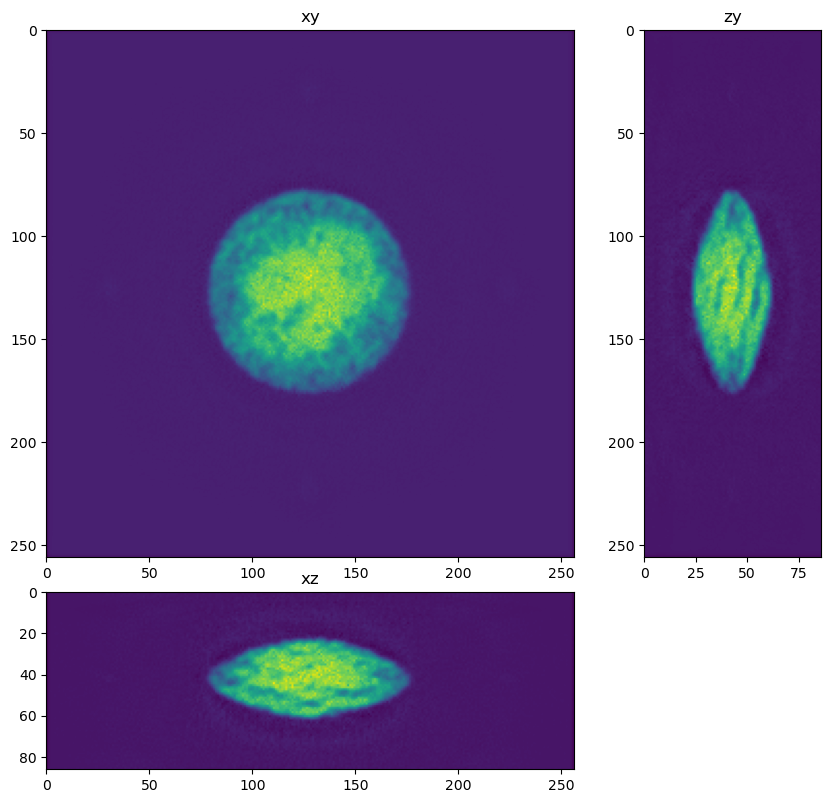
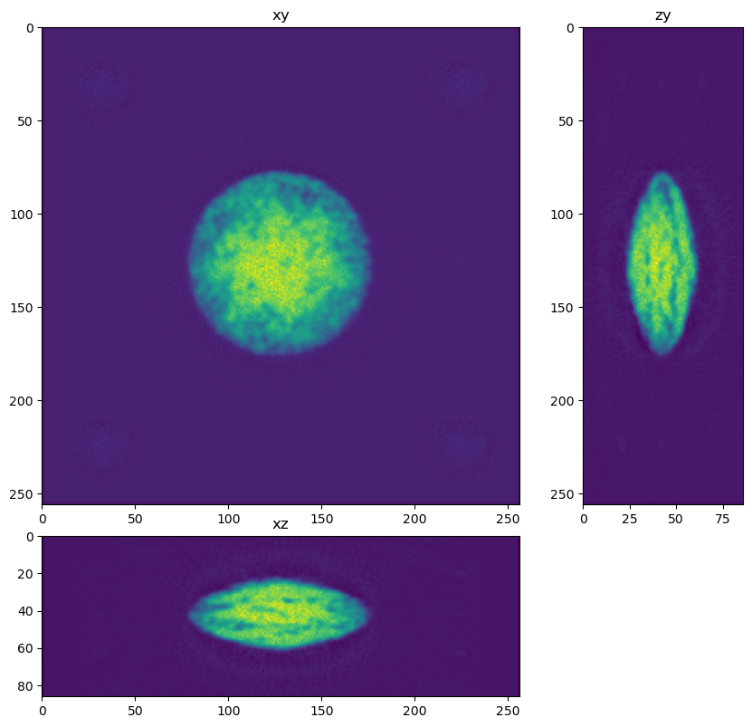
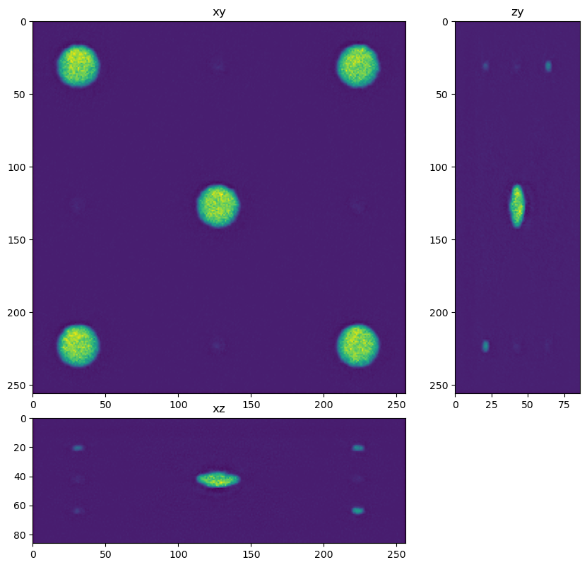

Care restoration (prediction)#
In this notebook we use the trained CARE network to restore an image
from skimage.io import imread, imsave
from tnia.plotting.projections import show_xyz_slice, show_xyz_max
from csbdeep.models import Config, CARE
from skimage.transform import resize
import sys
sys.path.append('../')
import decon_helper as dh
import os
tnia available
stackview available
Load an input image#
In this cell we load an input image. Note that the image is bigger than the patch size we trained on. The CSBDeep framework will take care of applying the network in chunks.
input_names = [r'../../data/deep learning testing/inputs/nuclei.tif',
r'../../data/deep learning testing/inputs/spheres1.tif',
r'../../data/deep learning testing/inputs/spheres2.tif',
r'../../data/deep learning testing/inputs/spheres3.tif']
inputs=[]
for input_name in input_names:
input = imread(input_name)
nmin=input.min()
nmax=input.max()
input = (input.astype('float32')-nmin) / (nmax - nmin)
inputs.append(input)
dh.show_xyz_slice(input, 'tnia')




Load the model#
Load the model that we trained in the previous notebook
# load the model using the name of the model and the path to the model
#model_name = 'cytopacq_noise_high_na_high'
#model_name = 'big_small_noisy_notnoisy_model'
model_name = 'combined'
model = CARE(None, model_name, basedir='../../models')
Loading network weights from 'weights_best.h5'.
Apply the model#
restorations = []
for input in inputs:
restored = model.predict(input, axes='ZYX', n_tiles=(1, 2, 2), normalizer=None)
restorations.append(restored)
1/1 [==============================] - 4s 4s/step
1/1 [==============================] - 1s 940ms/step
25%|██▌ | 1/4 [00:00<?, ?it/s]
1/1 [==============================] - 0s 32ms/step
50%|█████ | 2/4 [00:00<00:00, 6.38it/s]
1/1 [==============================] - 0s 42ms/step
75%|███████▌ | 3/4 [00:00<00:00, 4.36it/s]
1/1 [==============================] - 0s 50ms/step
100%|██████████| 4/4 [00:01<00:00, 3.91it/s]
1/1 [==============================] - 0s 38ms/step
25%|██▌ | 1/4 [00:00<?, ?it/s]
1/1 [==============================] - 0s 39ms/step
50%|█████ | 2/4 [00:00<00:00, 6.21it/s]
1/1 [==============================] - 0s 59ms/step
75%|███████▌ | 3/4 [00:00<00:00, 4.20it/s]
1/1 [==============================] - 0s 42ms/step
100%|██████████| 4/4 [00:01<00:00, 3.98it/s]
1/1 [==============================] - 0s 41ms/step
25%|██▌ | 1/4 [00:00<?, ?it/s]
1/1 [==============================] - 0s 40ms/step
50%|█████ | 2/4 [00:00<00:00, 5.95it/s]
1/1 [==============================] - 0s 41ms/step
75%|███████▌ | 3/4 [00:00<00:00, 4.24it/s]
1/1 [==============================] - 0s 41ms/step
100%|██████████| 4/4 [00:01<00:00, 3.95it/s]
for restored in restorations:
dh.show_xyz_slice(restored, 'tnia')




import napari
viewer = napari.Viewer()
viewer.add_image(input, name='input')
viewer.add_image(restored, name='restored')
napari.manifest -> 'napari-hello' could not be imported: Cannot find module 'napari_plugins' declared in entrypoint: 'napari_plugins:napari.yaml'
<Image layer 'restored' at 0x22c3d38c760>